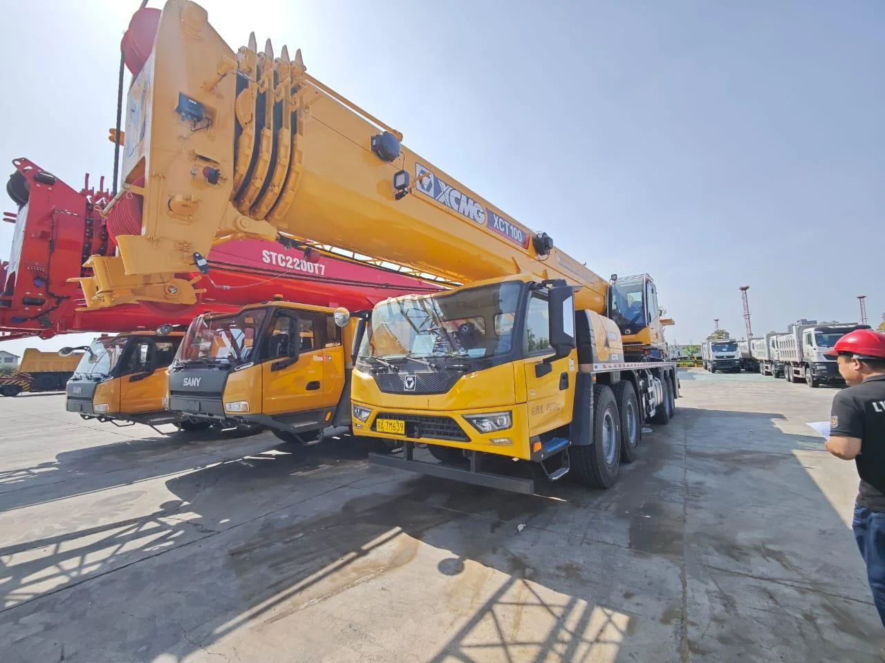
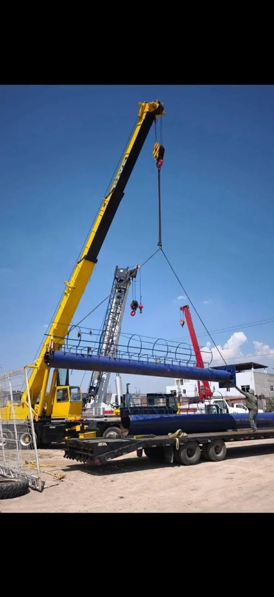
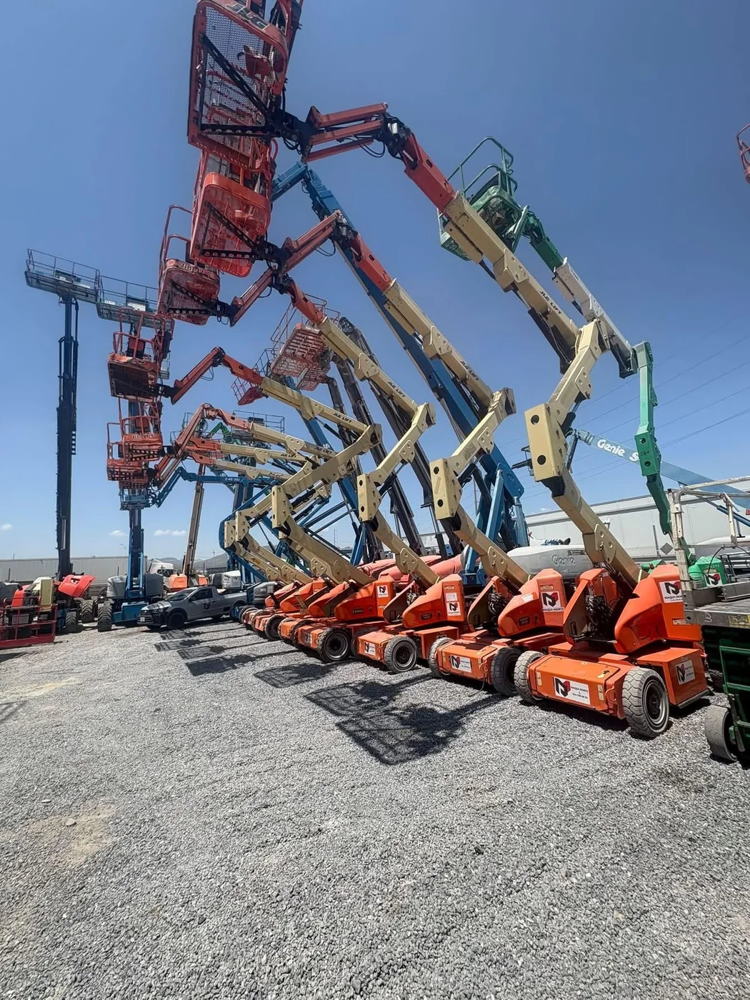
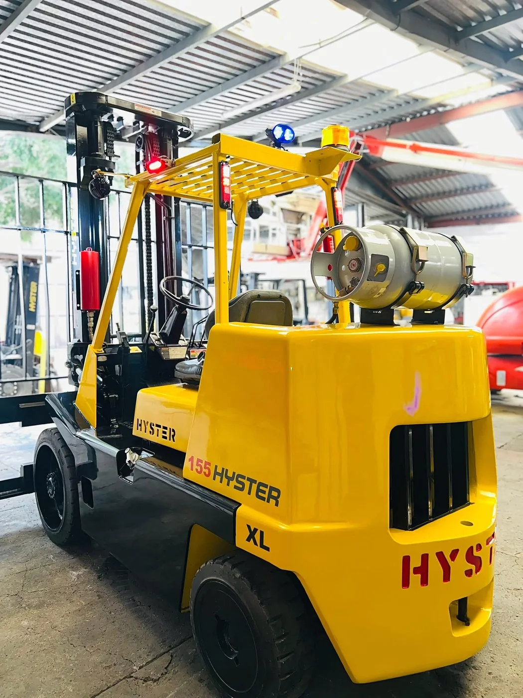
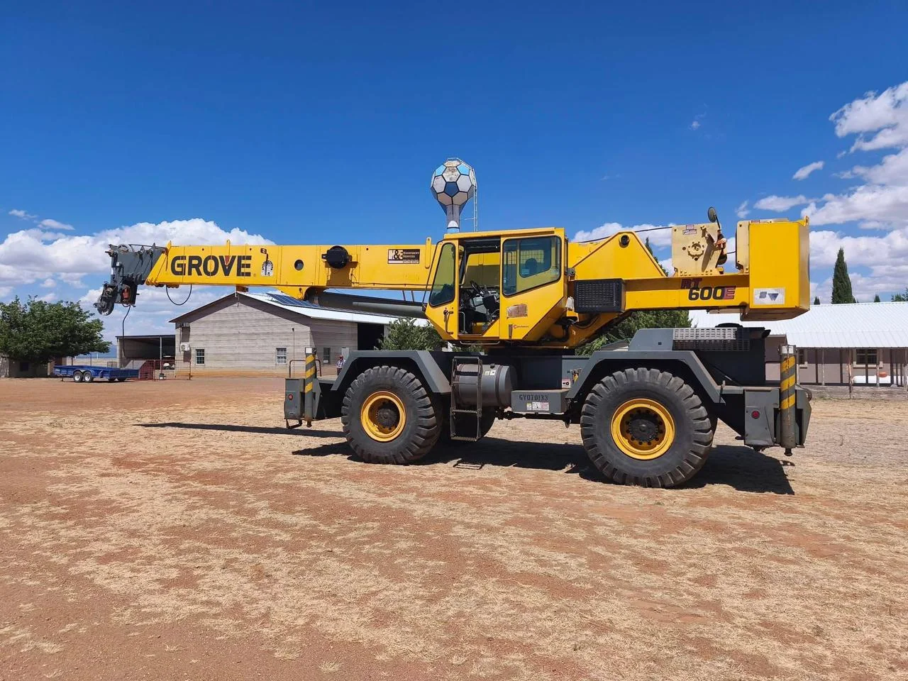
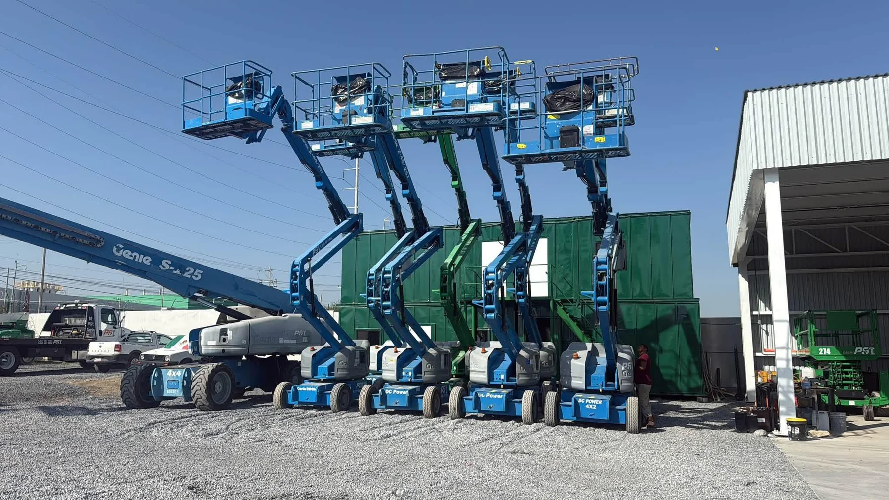
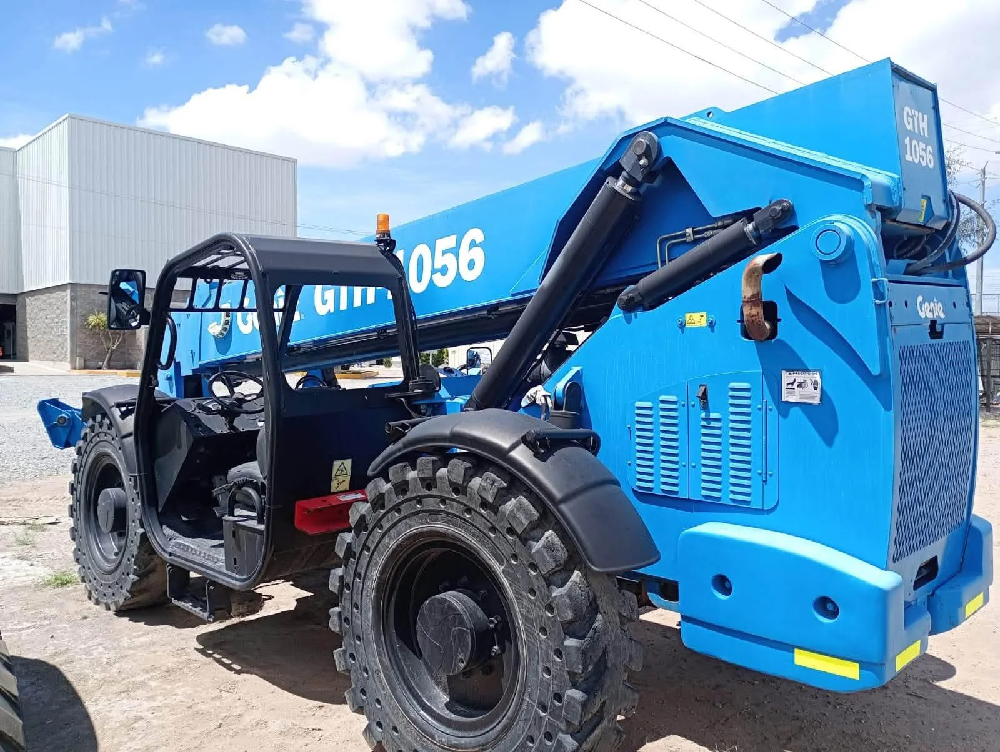

Misión
Brindar soluciones de elevación, maniobra y renta de maquinaria con atención ágil, responsable y enfocada en las condiciones reales de cada proyecto.
Grúas telescópicas, Titán, HIAB, plataformas aéreas, montacargas, maquinaria y transporte especializado para industria, construcción y logística.

Grúas Telescópicas es una empresa mexicana con sede y oficinas operativas en Querétaro. Atendemos proyectos de industria, construcción, logística y mantenimiento, con soluciones de renta de grúas, plataformas, montacargas, manipuladores, maquinaria y transporte especializado.
Contamos con más de 10 años de experiencia acumulada en trabajos de elevación, maniobras y apoyo con maquinaria. Nuestro enfoque es revisar las condiciones reales de cada proyecto —tipo de trabajo, peso, altura, radio, accesos, ubicación y fecha— para orientar una alternativa adecuada y brindar atención directa.
Nuestra operación se concentra en Querétaro y la zona Bajío, con atención a proyectos en Guanajuato, San Luis Potosí, Aguascalientes, Jalisco y Zacatecas, además de Estado de México y Ciudad de México, de acuerdo con disponibilidad, logística y condiciones del servicio.
Brindar soluciones de elevación, maniobra y renta de maquinaria con atención ágil, responsable y enfocada en las condiciones reales de cada proyecto.
Consolidarnos como un aliado confiable para la industria y la construcción en Querétaro y el Bajío, ampliando nuestra capacidad de atención y cobertura de forma ordenada.
Grúas telescópicas, Titán, HIAB y apoyo para montajes industriales.
Plataformas telescópicas, articuladas, tijera, personal y canastilla.
Montacargas, manipuladores, retroexcavadora, minicargador y transporte especializado.
Cuéntanos qué necesitas mover, elevar, montar o trasladar. Con peso, altura, ubicación y fecha podemos orientar la alternativa adecuada para tu proyecto.
Ver catálogo completoEsta sección muestra solo una parte de la flota. Consulta el catálogo completo para revisar todas las familias de equipos, aplicaciones y opciones disponibles para cotizar.
En un mismo proyecto puede intervenir grúa, montacargas, plataforma o transporte. Nuestro cotizador concentra la información necesaria para revisar la maniobra desde el primer contacto.

Una muestra de los equipos y soluciones que forman parte del catálogo.





El objetivo es concentrar desde el inicio los datos que ayudan a revisar el equipo, la logística y las condiciones generales de la maniobra.
Indica qué necesitas elevar, mover, montar, transportar o realizar en altura.
Ubicación, fecha, peso, altura aproximada, accesos y fotografías cuando estén disponibles.
Se identifica la familia de equipo que mejor corresponde a las condiciones descritas.
Completa el cotizador o envía la información por WhatsApp para continuar la atención.
Revisamos proyectos en Querétaro, Guanajuato, Aguascalientes, Jalisco, San Luis Potosí, Zacatecas, Estado de México y Ciudad de México.
Ten a la mano ubicación, fecha, peso aproximado, altura y fotografías del acceso cuando sea posible.
Si tienes placa técnica o ficha del equipo, agrégala.
Una fotografía del área ayuda a revisar accesos y obstáculos.
Estos datos ayudan a revisar disponibilidad y logística.
Selecciona el servicio, agrega ubicación, fecha, capacidad y fotografías, y descarga tu solicitud en PDF.